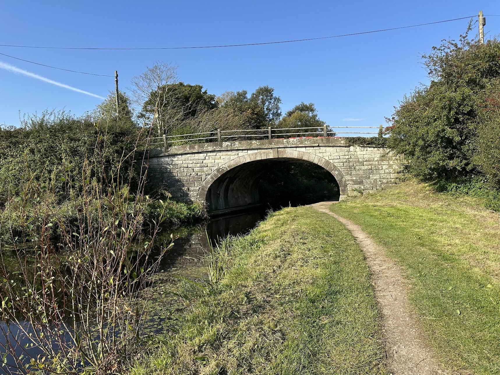
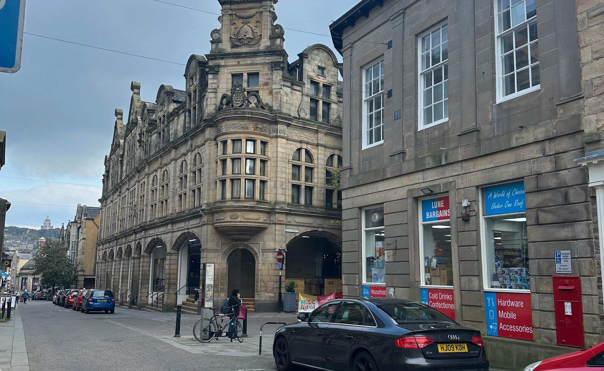
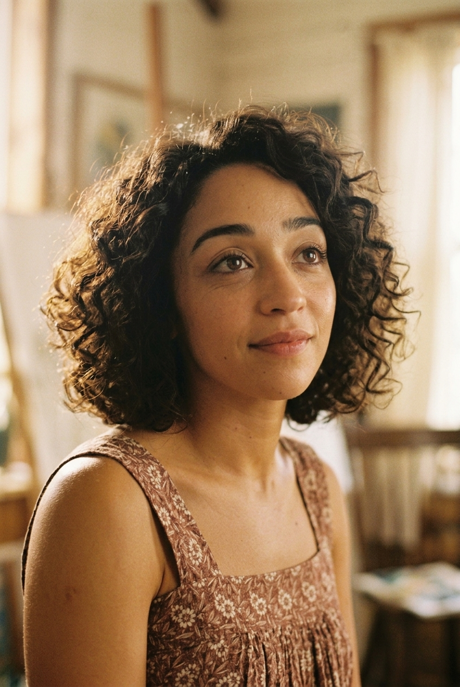
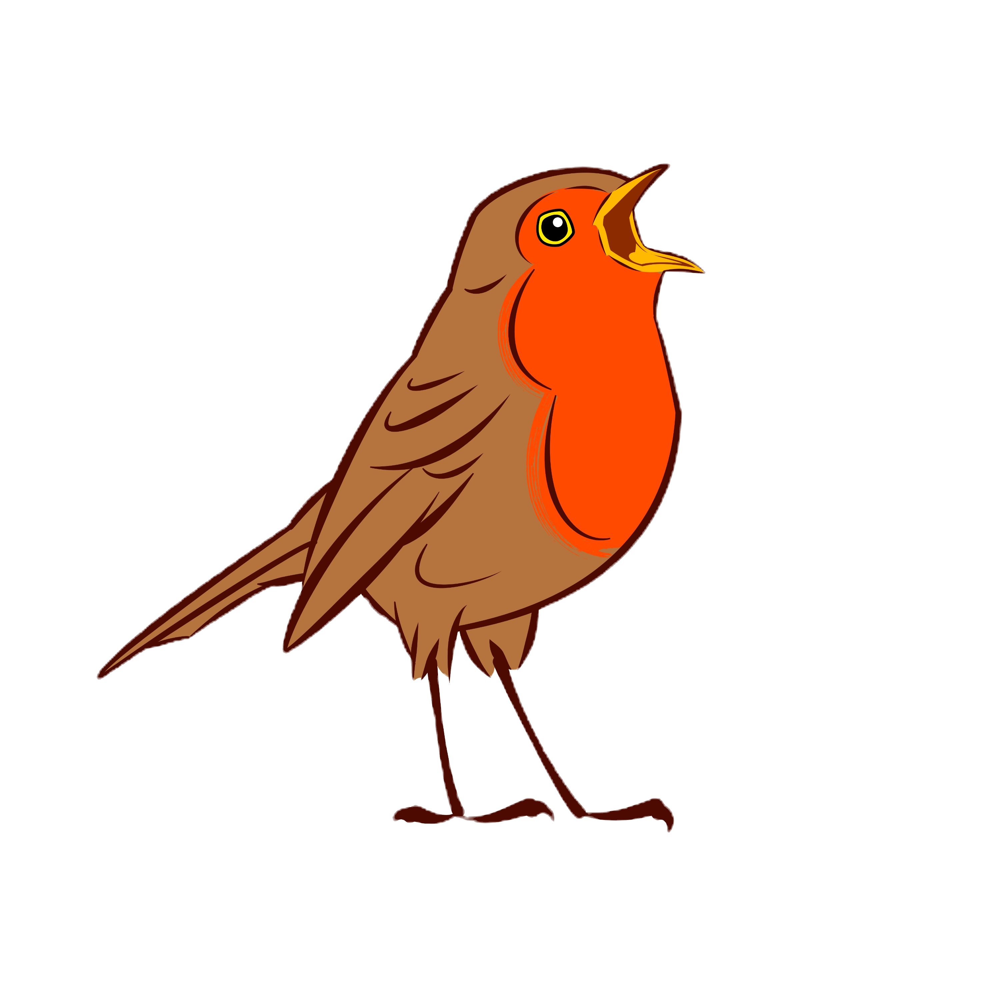

FROM ACCLAIMED NOVEL TO FEATURE FILM
THE GOSPEL OF ORLA

"Orla" tells the coming-of-age story of a troubled young girl who recently lost her mother. On her journey to find peace, she encounters a strange foreign man who is also on a journey to claim his destiny.
Orla is trying to make sense of a world without her mother.
A mysterious encounter makes her question what is possible.
Two very different journeys become unexpectedly connected.




Set against the canals, towpaths and historic landscapes of Lancaster and Glasson Dock, ORLA inhabits a recognisably northern England that gradually becomes something stranger — a world where the ordinary and the miraculous can exist side by side.




At the helm is Producer Nancy Garvin, whose passion for developing rich, emotionally complex narratives drives the company's creative vision.
With experience spanning all facets of film production and a sharp eye for story development, Nancy leads with a collaborative, audience-focused approach, partnering with visionary writers, directors and talent to bring meaningful, high-quality films to life.
ORLA marks a powerful next chapter in her mission to produce compelling, emotionally resonant cinema with international appeal.
An award-winning filmmaker and film scholar, Dr. Maryam Ghorbankarimi brings extensive creative and production expertise spanning narrative and documentary cinema.
As Senior Lecturer in Film Practice at Lancaster University and founder of independent production company Bina Film, Maryam bridges academic rigor with practical filmmaking, championing compelling, character-driven storytelling with a distinctive international perspective.
An award-winning Creative Producer and Director with more than 30 years' experience across film, television, animation and commercial production. Tim brings extensive experience in developing and delivering ambitious creative projects, combining strong storytelling with the practical realities of production.
An accomplished executive program leader with more than 30 years’ experience across Google, Apple, Microsoft, and startups. Michael brings proven operational discipline to film production, promising investors transparent governance, rigorous schedule management, and uncompromising budget control for ambitious creative visions.

A UK-based independent production company led by producers and directors Isobel Drane and Kieran Lowley, dedicated to ambitious, character-driven storytelling.
Pioneering innovative filmmaking and cutting-edge virtual production technologies, Red Robin Films collaborated with Sony Europe on the landmark production Hestia to push the boundaries of cinematic storytelling.
"We are thrilled to adapt The Gospel of Orla for the big screen," commented Nancy Garvin, CEO and Producer of Well Produced Films. "Eoghan Walls has created a truly original and cinematic tale. We are honored to bring it to life as 'Orla'."
"It’s going to be great!" said author Eoghan Walls. "Well Produced Films has a wonderful vision for the project; it will be amazing to see the world of 'Orla' onscreen. I believe in their power to realise the story, and share it with a wider audience."